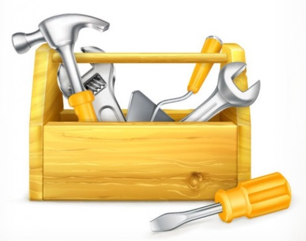

EKIN LANARI!
TALDEKO PROIEKTUA: KABLEZ TELEGIDATUTAKO AUTOA
Auto bat eraiki behar duzue, aurrerantz, atzerantz edo alboetarantz egin dezakeena. Horretarako, motor bat jarri behar dugu, atzeko gurpil bakoitzean. Urrutiko kontrolean egongo diren kommutadore bikoitzen bidez, bata ala bestea aktibatu ahal izango dugu, aurrerantz edo atzerantz. Gurpil birakaria izango dugu autoaren oinarriaren aurrealdean, eta horrek hirukia egingo du atzeko beste gurpil biekin, eta horrela alboetara egin ahal izango dugu bira. Mugimendu horiek guztiak urrutiko kontrol batek kontrolatzen ditu. Urrutiko kontrolak osagai hauek izango ditu: pila bat, atzeko gurpiletako bat edo bestea aktibatu edo amatatuko duten 2 kommutadore orokor eta motorrak aurrerantz edo atzerantz bira egiteko beste bi kommutadore.
Ibilgailuaren oinarrian motorrak egongo dira, gurpil birakari bat eta bi gurpil eragile motor bakoitzera lotuta; horrela, autoa aurrerantz edo atzerantz joango da, kommutadore bikoitzen laguntzaz. Bi gurpil eragileak motorraren ardatzera lotuta egongo dira, motorrak bira egiten duenean, horiek ere bira egin dezaten. Motorrak kable bidez egongo dira urrutiko kontrolera konektatuta, eta motor bat eta bestea aktibatzean, albo bakoitzera bira egiteko aukera emango digu, eta biak aktibatzen badira, aurrerantz edo atzerantz egingo dute.
Autoak bi argi berde izango ditu, autoa aurrerantz doanean, eta bi argi gorri, autoa atzera-martxan doanean.
 MATERIALAK
MATERIALAK
 Egur kontratxapatua edo kartoia egiturarako, zurgin-kola, korronte zuzeneko motor elektrikoa, 4,5 V-eko pila zapala, kobrezko haridun kableak, etengailua, gurutzatze-kommutadorea, koloreetako LED diodoak, 3 gurpil finko eta 1 gurpil birakari.
Egur kontratxapatua edo kartoia egiturarako, zurgin-kola, korronte zuzeneko motor elektrikoa, 4,5 V-eko pila zapala, kobrezko haridun kableak, etengailua, gurutzatze-kommutadorea, koloreetako LED diodoak, 3 gurpil finko eta 1 gurpil birakari.
Plano hauek erabil ditzakezu:
{kind=link}
1. planoa: Keinukari eta argien kableak
{kind=link}
2. planoa: Motorren kableak
{kind=link}
3. planoa: Urrutiko kontrolaren kableak